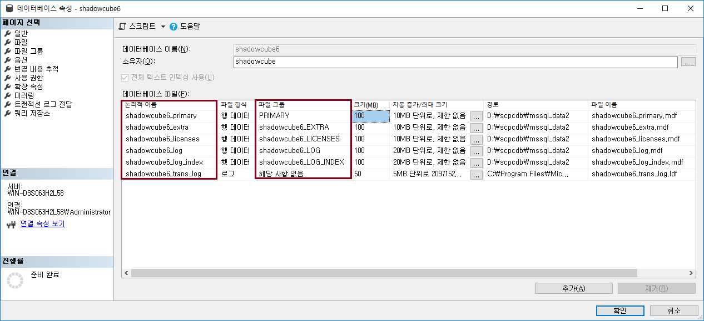

ShadowCube 데이터베이스 구조
SQL Server 파일 및 파일그룹
-
ShadowCube 의 SQL Server 에서 사용하는 파일 및 파일그룹에 대해 알아보자.
-
File Groups
-
SQL Server 는 데이터베이스의 default 파일그룹이 PRIMARY 로 생성이 된다. 이는 변경할 수 없다. 따라서 ShadowCube 도 PRIMARY 파일그룹을 사용한다.
-
그 외 나머지 파일그룹은 데이터의 성격별로 구분한 것이다.
-
여기서 파일그룹명 prefix 문자열인 shadowcube6 는 정책센터 최초 설치 시, 관리자가 직접 입력한 데이터베이스명을 따라 생성된다.
-
최초 설치 시, 기본 생성되는 Files

-
이후, 로그 데이터가 쌓이면 새로운 File 이 생성됨
파일그룹별로 쌓이는 데이터 종류
-
가장 중요한 데이터는 PRIMARY 파일그룹에 저장하고, 그 외 각 데이터의 성격별로 파일그룹을 만들어 저장한다.
-
복호화 요청, 결재 등은 shadowcube6_extra 에 저장되고, 라이선스 데이터는 shadowcube6_licenses 에 저장된다.
-
문서사용로그는 shadowcube6_document_logs, 암호화로그는 shadowcube6_encryption_logs 에 저장된다.
-
이는 PostgreSQL 과 동일하게 구성되어 있다.
처음으로
이전
다음